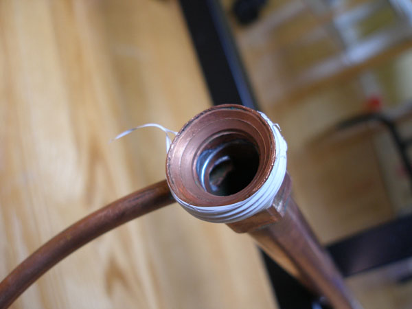
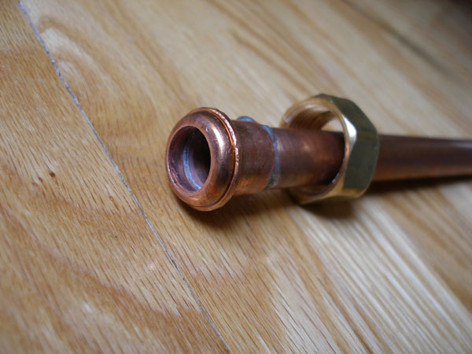
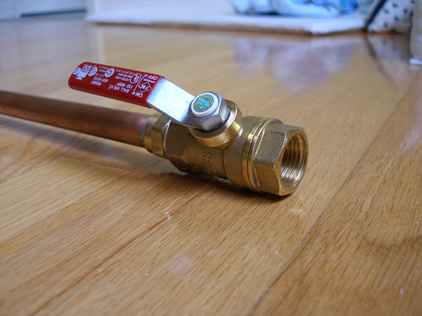
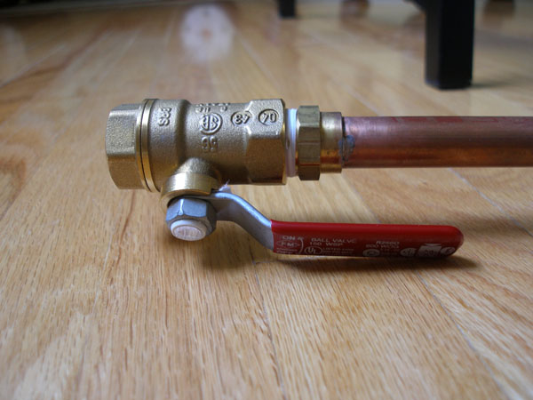
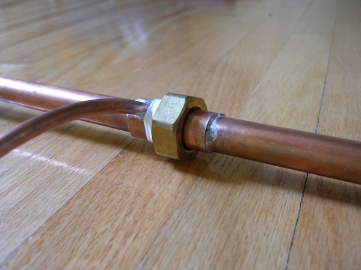
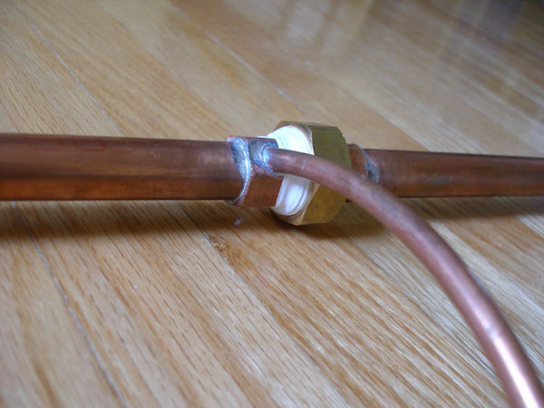
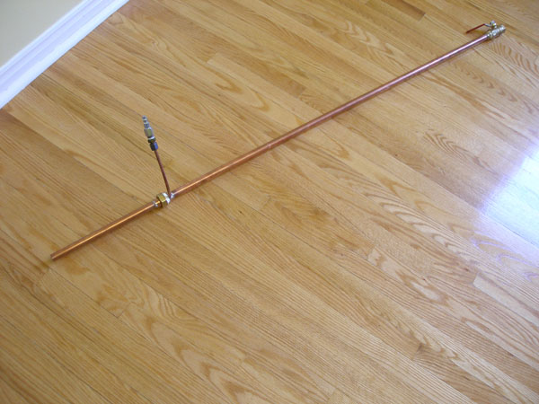
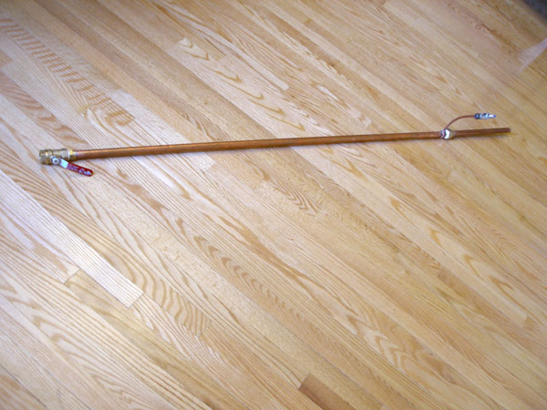

1. Make the Vortex Chamber
Let's start at the hardest part. The most difficult part was making the vortex chamber itself because it involved drilling into the re-makeable coupling at an angle. I used a drill press and put the coupling into a vice. I used a cobalt-nitride drill bit—which is extremely hard—but I think that part was overkill. I just slowly lowered the drill bit down and it made it through just fine.
At the time, I didn't have the camera with me, so I have to show the vortex chamber with the copper tubing already soldered into it. By this time, I had already tested it, so that's remnants of Teflon tape you see. This piece of the re-makeable coupling was soldered to one end of the 1 m length of copper piping. Incidentally, you can see a ring indentation where the washer was pressed into the inner surface of the coupling. Also, you can see that the end of the copper tubing has been ground with a bench grinder so that it is shaped to ensure no tubing obstructs air flow around the chamber.

As you can see above, that's the half of the re-makeable coupling with the hex sides (for wrenches). If I drilled the other (round) side, I would run into trouble when I soldered in my copper tubing, because if you look at the pictures of the coupling on the Parts List, you can see that you need to be able to unscrew the threaded collar and pull it out over the round side to separate the coupling.
2. Solder the Short Pipe
Here's the other half of the re-makeable coupling soldered onto the 25 cm copper pipe. I used excessive amounts of solder by accident. Nothing goes on the other end of the 25 cm piping.

3. Install the Hot-End Ball Valve
The sweat-to-thread coupling was soldered onto the other end of the 1 m length of copper piping, and the ball valve threaded on with Teflon tape.


"But wait!" you say. I used a different sweat-to-thread coupling here! Yes, the one shown in the parts list was crap. I bought another one. The new one was made from solid brass and it was cheaper. (Why?) Also from Home Depot.
4. Assemble and Seal the Vortex Chamber
Finally, the washer was sandwiched in the re-makeable coupling, and the coupling cranked together with wrenches. I used more Teflon tape to seal it up.


5. Finished Tube
The finished Ranque-Hilsch effect tube is shown here.


Return to the project overview and test results.